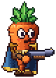
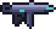
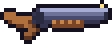
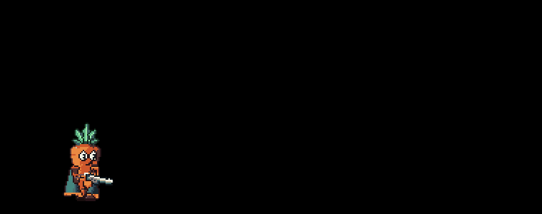

Weapons
Every carrot carries the same kit: three guns and a recharging Energy ball. There are no pickups or ammo drops. Each gun has its own magazine and reloads itself when it runs dry, so the choice is always which tool fits the fight: the precise Revolver, the SMG hose or the point-blank Shotgun.

The guns at a glance
| Revolver | SMG | Shotgun | |
|---|---|---|---|
| Key | 1 | 2 | 3 |
| Fires | One shot per click | Full auto while held | A fan of pellets per click, pumped after each |
| Bullets per shot | 1 | 1 | 8 |
| Damage per bullet | 11 hp | 5 hp | 7 hp |
| Headshot multiplier | 2 | 1.6 | 1.5 |
| Time between shots | 0.14 s | 0.068 s | 0.75 s |
| Rounds | 6 rounds | 32 rounds | 6 rounds |
| Reload | 0.5 s | 1.1 s | 1.4 s |
| Full damage out to | 450 px | 110 px | 60 px |
| Damage at long range | 0.7 of full | 0.12 of full | 0.15 of full |
| Knockback per bullet | 1.45x | 0.4x | 0.7x |
| Pushes you back | 0 px/s | 0 px/s | 170 px/s |
Knockback is a multiple of each enemy's own shove, so the same gun moves a zombie further than a boss. Shotgun pellets each carry it, so a point-blank blast shoves hardest.
Controls
- Click fires. The SMG keeps firing while the button is held.
- R reloads early. Every gun also reloads by itself the moment it runs dry (see Reloading).
- 1, 2, 3 pick a gun; Q cycles to the next one.
- G or right mouse throws the Energy ball.
Swapping
Each gun keeps its own rounds, so you can swap away from a half-empty gun and come back to it later. Swapping takes a brief moment before the new gun can fire, and it cancels a reload in progress, so swapping to a loaded gun is often faster than finishing a reload. You can't swap while downed.
All of this is shown in the bottom-left Weapon HUD: the energy ball's recharge, the rounds left in the gun in hand, and its name.
Damage, falloff and headshots
Each gun deals full damage out to a set distance, then falls off in two steps to a floor (see each gun's page for its curve). A hit on an enemy's head multiplies the damage. Gold numbers mark headshots. The shooter works out the final damage on their own machine and reports it to the host, which applies it, so hits feel instant in co-op.
Co-op
Everyone sees everyone's shots, casings and impacts. Shots, shotgun blasts and energy-ball throws each travel as a single network message; every machine draws the same pellet fan and the same ball flight from it. Only the shooter's machine reports the damage.
 RevolverA six-shooter sidearm, precise and hard-hitting, with almost no damage falloff.
RevolverA six-shooter sidearm, precise and hard-hitting, with almost no damage falloff.
SMGA full-auto hose with a big magazine, deadly up close and nearly harmless at range.
ShotgunA pump-action that fans out a blast of pellets, strongest point-blank and weak at range.
Energy ballThe carrot's grenade, a crackling plasma orb that's lobbed, bounces, and bursts in an electric shockwave.- Weapon HUDThe bottom-left readout of your energy ball's recharge, the rounds in your gun and its name.